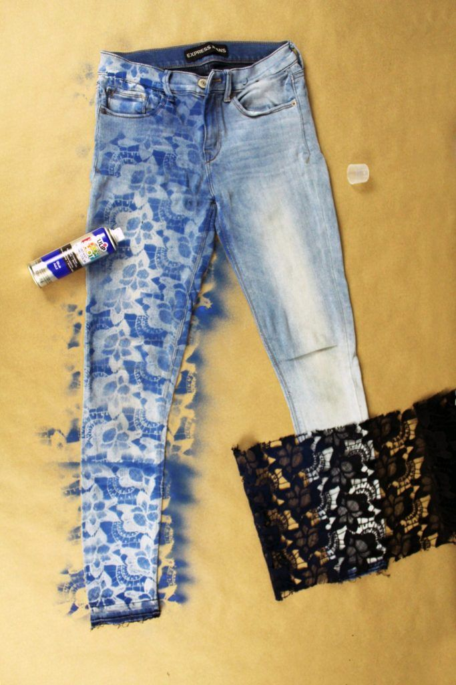
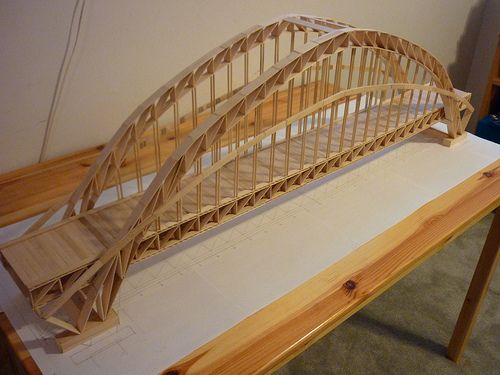
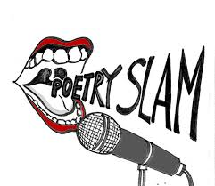

I have completed a Look Book for one of my Fashion Classes. Basically, I created a few different articles of clothing by sewing with a machine and my own physical hands. My favorite piece was a pair of jeans that I made for the college student demographic. This was completed November 2019. I really enjoyed this project because it taught me more about the fashion industry. The strength of this assignment was the obscure angle I took on my designs, however that also could be seen as a weakness because it did not appeal to everyone.
I have completed a simulation of a bridge design that I made in one of my engineering classes in high school. I used household items to create a design that I made on my own to express my creative side. This was completed in March of 2018. This project taught me how to become creative with very little resources. It proved that you can always make something out of nothing. The strength of this project is was the structure of my bridge. The weakness of this project was having very limited supplies.
I have completed a slam poetry project in an english class I have taken. I had to create a dramatic scene, back story, and storytelling process. It gave me another chance to express my dramatic side. This was completed in September 2019. It was a learning experience for me because I took steps towards learning how to be vulnerable which is something I struggle with. The strength of this project was performing with great passion. My weakness of this project is not being able to make this a recurring event.
